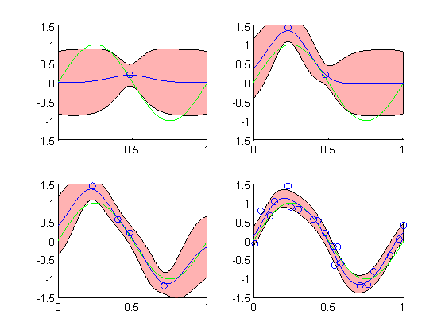

Contents
clc; clear all; close all; x = 0:.01:1; green = sin(2*pi*x); noise = .25*randn(1,length(green)); data = green+noise; % 1 Sample n1 = randi([1 length(data)],1,1); % 2 Samples n2 = [n1 randi([1 length(data)],1,1)]; % 4 Samples n3 = [n2 randi([1 length(data)],1,2)]; % 25 Samples n4 = [n3 randi([1 length(data)],1,21)];
Design Matrices
s = 2; mu = -.2:.05:0.2;
mu = linspace(0,1,9); s = .1; phi1 = exp(-(x(n1)-mu).^2/(2*s^2)); phi2 = zeros(length(n2),9); for ii = 1:length(n2) phi2(ii,:) = exp(-(x(n2(ii))-mu).^2/(2*s^2)); end phi3 = zeros(length(n3),9); for ii = 1:length(n3) phi3(ii,:) = exp(-(x(n3(ii))-mu).^2/(2*s^2)); end phi4 = zeros(length(n4),9); for ii = 1:length(n4) phi4(ii,:) = exp(-(x(n4(ii))-mu).^2/(2*s^2)); end
Computations
beta = 25; alpha = 2; sn1 = (alpha*eye(9) + beta*(phi1'*phi1))^-1; sn2 = (alpha*eye(9) + beta*(phi2'*phi2))^-1; sn3 = (alpha*eye(9) + beta*(phi3'*phi3))^-1; sn4 = (alpha*eye(9) + beta*(phi4'*phi4))^-1; mn1 = beta*sn1*phi1'*data(n1)'; mn2 = beta*sn2*phi2'*data(n2)'; mn3 = beta*sn3*phi3'*data(n3)'; mn4 = beta*sn4*phi4'*data(n4)'; sphi = zeros(9,1); for ii = 1:length(x) sphi = exp(-(x(ii)-mu').^2./(2*s^2)); mean1(ii) = mn1'*sphi; mean2(ii) = mn2'*sphi; mean3(ii) = mn3'*sphi; mean4(ii) = mn4'*sphi; var1(ii) = 1/beta + sphi'*sn1*sphi; var2(ii) = 1/beta + sphi'*sn2*sphi; var3(ii) = 1/beta + sphi'*sn3*sphi; var4(ii) = 1/beta + sphi'*sn4*sphi; end
Plots
1 Sample
subplot(2,2,1); axis([0,1,-1.5,1.5]) hold on; a = mean1 + sqrt(var1); b = mean1 - sqrt(var1); h = fill([x fliplr(x)], [a fliplr(b)], 'r') set(h,'facealpha',0.3) plot(x,green,'g') plot(x(n1),data(n1),'o') plot(x,mean1) % 2 Samples subplot(2,2,2); axis([0,1,-1.5,1.5]) hold on; a = mean2 + sqrt(var2); b = mean2 - sqrt(var2); h = fill([x fliplr(x)], [a fliplr(b)], 'r') set(h,'facealpha',0.3) plot(x,green,'g') plot(x(n2),data(n2),'o') plot(x,mean2) % 4 Samples subplot(2,2,3); axis([0,1,-1.5,1.5]) hold on; a = mean3 + sqrt(var3); b = mean3 - sqrt(var3); h = fill([x fliplr(x)], [a fliplr(b)], 'r') set(h,'facealpha',0.3) plot(x,green,'g') plot(x(n3),data(n3),'o') plot(x,mean3) % 25 Samples subplot(2,2,4); axis([0,1,-1.5,1.5]) hold on; a = mean4 + sqrt(var4); b = mean4 - sqrt(var4); h = fill([x fliplr(x)], [a fliplr(b)], 'r') set(h,'facealpha',0.3) plot(x,green,'g') plot(x(n4),data(n4),'o') plot(x,mean4)
h = 174.0055 h = 179.0055 h = 184.0055 h = 189.0055